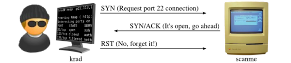
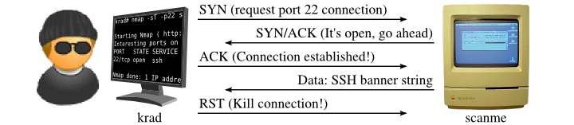

# Scan Types
Nmap can scan in different ways.
•
https://nmap.org/book/scan-methods.html## TCP SYN (Stealth) Scan (-sS)
•
https://nmap.org/book/synscan.htmlA SYN scan is the default Nmap scan.
SYN is fast and stealthy because it never completes the full TCP connection.
Example• Nmap sends a
SYN to port 22
• Port 22 replies with
SYN/ACK (i.e. it's open, go ahead and connect)
• Nmap sends
RST (because we now know that port 22 is open)
Open/Closed/FilteredNmap will return a state (open, closed, or filtered) for each port it queries.
Nmap sends out a SYN packet.
It receives a:
•
SYN/ACK - means the port is
open•
RST/ACK - means theh port is
closed• No response (even after retries) - nmap labels the port as
filtered• ICMP type 3 unreachable error (codes 1, 2, 3, 9, 10, or 13) - nmap labels the port as
filtered ◇ firewalls and routers usually return these
Common ICMP type 3 message codes:
Code Description0 Network uncreachable
1 Host unreachable
2 Protocol unreachable
3 Port unreachable
6 Destination network unknown
7 Destination host unknown
9 Communication administratively prohibited (network)
10 Communication administratively prohibited (host)
13 Communication administratively prohibited (general)
## TCP Connect Scan (-sT)
A TCP Connect scan will connect directly to the target if the port is open.
Target machines are likely to log this connection, and a decent IDS will probably pick up on the TCP connect packets.
Example• Nmap sends a
SYN to
port 22• Port 22 replies with
SYN/ACK (i.e. it's open, go ahead and connect)
• Nmap sends
ACK (and connects)
• Port 22 sends SSH banner
• Nmap sends
RST (and closes the connection without sending any data)
## UDP Scan (-sU)
Because UDP is stateless (sent packets aren't verified as received), services are identified either through:
• Negative scanning
◇ Using ICMP ‘unreachable’ responses from closed ports to infer which ports are open
• Payload scanning
◇ Sending correctly formated datagrams of common UDP services to elicit a response
◇ e.g. DNS, DHCP, TFTP
◇ Payloads listed here -
https://svn.nmap.org/nmap/nmap-payloadsUsing only ICMP is unreliable.
Security-conscious organisations often filter ICMP messages, and most operating systems rate-limit ICMP responses by default.
-sU uses a combination of both negative and payload scanning.
This means that output is often cloudy (both
open and
open|filtered states are returned).
root@kali:~# nmap -sU 10.10.10.45
...
111/udp open|filtered rpcbind
120/udp open|filtered cfdptkt
123/udp open ntp
135/udp open|filtered msrpc
136/udp open|filtered profile
137/udp open netbios-ns
138/udp open|filtered netbios-dgm
-sV attempts to determine service/version info.
Running
-sU -sV will have nmap actively probe each UDP port to see which respond.
This mean ports that were originally listed as
open|filtered or
closed might be identified as
open.
nmap -sU -sV 10.10.10.45Running Nmap in this fashion is, however, very slow against ambiguous open|filtered ports, and impractical when testing large networks.
e.g. testing 100 UDP ports with
-sU -sV often takes more than 10 minutes
## ICMP
Nmap sends an ICMP type 8 (echo request) packet and expects a type 0 (echo reply) response.
Ping requests are usually blocked nowadays, so it's not necessarily useful, but could useful on internal networks.
•
-PE - send echo request (standard, use this)
•
-PP - timestamp request
•
-PM - subnet mask request
nmap -sn -PEPM 10.12.5.0/24